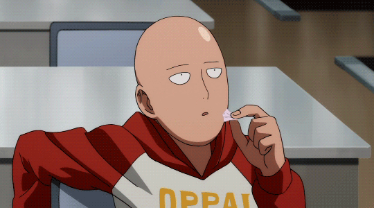
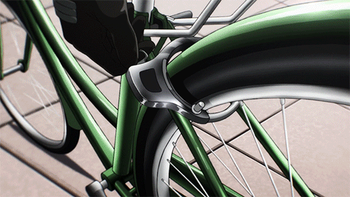

Ao longo da série, ele faz amizade com outros heróis, como Genos, um ciborgue que busca vingança contra um vilão que destruiu sua cidade.
PERSONAGENS PRINCIPAIS:

O protagonista conhecido como One Punch Man:
Saitama é um herói que pode derrotar qualquer inimigo com um único soco. Ele é conhecido por sua aparência comum e sua personalidade despretensiosa, mas busca um verdadeiro desafio em suas batalhas.
O aprendiz:
Genos é um ciborgue e aprendiz de Saitama. Ele busca vingança contra um vilão que destruiu sua cidade e se torna amigo de Saitama. Genos é sério e determinado, contrastando com a atitude despreocupada de Saitama.

O herói sem superpoderes:
Um herói que não possui poderes sobrenaturais, Mumen Rider é famoso por sua determinação e coragem. Ele luta contra vilões usando uma bicicleta e suas habilidades de combate, sendo um símbolo de perseverança, mesmo diante de adversidades.
O antagonista:
O principal antagonista da saga do "Cavaleiro da Lua", Boross é o líder da raça alienígena chamada "Dark Matter Thieves". Ele possui força imensa e habilidades regenerativas, buscando Saitama para encontrar um adversário digno. Sua luta com Saitama revela a verdadeira extensão do poder do protagonista.TEMAS ABORDADOS:
O anime explora questões como a busca por propósito, a crítica aos clichês do gênero de super-heróis e a monotonia da vida cotidiana.
ESTILO DE ANIMAÇÃO:
Conhecido por sua animação de alta qualidade, especialmente nas cenas de luta.
RECEPÇÃO:
Recebeu aclamação da crítica e um grande número de fãs, resultando em várias temporadas e adaptações.
VÍDEOS:
"Eu não sinto mais emoção" é um edit sobre Saitama, personagem de One Punch Man. Ele apresenta imagens e músicas relacionadas ao tema.